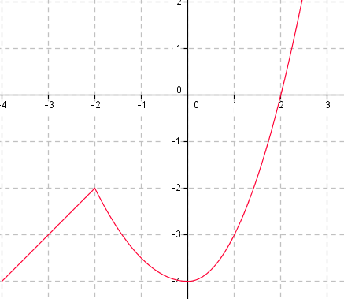

9. Funktionsvärden
Bestäm funktionsvärdena för funktionen \(f(x)=x^2-2\) då \(x=2\) och då \(x=2,5\).
Värdet av en funktion får vi genom att placera in värdet på variablens plats.
Exempel 1 Bestäm funktionsvädet för \(f(x)=3x-5\) då \(x\) får värdena \(-3\), \(1\) och \(5\).
Lösning
Vi får att
\(\begin{array}{rl} -3: & f(-3)=3(-3)-5=-9-5=-14 \\ 1: & f(1)=3\cdot 1-5=3-5=-2 \\ 5: & f(5)=3\cdot 5 -5 = 15-5=10\\ \end{array}\)
Exempel 2 Låt \(g(x)=2x-6\).
- Bestäm funktionsvärdet för \(x=4\).
- Den punkt som ger funktionsvärdet 4.
Lösning
- Vi får att \(g(4)=2\cdot 4 -6 = 8-6=2\).
Här söker vi den \(x\)-koordinat som ger att funktionsvärdet är 4, alltså \(g(x)=4\).
Vi får att
\(\begin{array}{rcll} 4 & = & 2x-6 & \mid +6\\ 4+6 & = & 2x \\ 2x & = & 10 & \mid /2\\ x & = & \dfrac{10}{2}=5 \\ \end{array}\)
\(x\)-koordinaten 5 ger funktionsvärdet 4.
Nollställen för en funktion
Funktionens nollställen är de punkter där grafen skär \(x\)-axeln. Det sker då \(f(x)=0\), som betyder att \(y\)-koordinaten har värdet 0. När vi söker nollställen svarar vi antingen som en punkt eller som en \(x\)-koordinat.
Exempel 3 Bestäm nollstället för funktionen \(h(x)=4x-8\).
Lösning
Vi löser ekvationen
\(\begin{array}{rcll} 4x -8 & = & 0 & \mid +8\\ 4x & = & 8 & \mid /4 \\ x & = & \dfrac{8}{4}=2 \end{array}\)
Nollstället är \((2,0)\).
Exempel 4 Bestäm nollställena för \(f(x)=2x^2-6x\).
Lösning
Vi löser ekvationen
\(\begin{array}{rcll} 2x^2-6x & = & 0 & \mid \text{ Utbrytning}\\ 2x(x-3) & = & 0 & \mid\text{ Nollregel} \\ \end{array}\)
\(2x=0 \Leftrightarrow x=0\) eller \(x-3=0 \Leftrightarrow x=3\).
Vi har två nollställen, \(x=0\) och \(x=3\).
Funktioner klassificerar vi som antingen jämna eller udda genom att se på den högsta exponenten för funktionen. Jämna funktioner är funktioner vars högsta exponent är ett jämt tal: \(2, 4, 6, 8 \ldots\) och udda funktioner har ett udda tal: \(1, 3, 5, 7, \ldots\).
Funktionsvärden och nollställen på GeoGebra
Uppgifter
Bestäm följande värde genom att avläsa från grafen.

- \(f(1)\)
-3
- \(f(-2)\)
-2
- \(f(x)=0\)
\(f(x)=0\) då \( x = 2\).
- \(f(x)=-4\)
\(f(x)=-4\) då \(x = -4\) eller \( x =0\).
- \(f(1)\)
- Rita grafen av funktionen \(f(x)=x^3+1\) på GeoGebra och svara på följande frågor.
- Bestäm nollstället för funktionen.
Nollstället är i punkten \(x=-1\) och \( x=0 \).
- \(f(1)\)
2
- \(f(x)=1\)
\(f(x)=1\) då \( x = 0 \).
- Bestäm nollstället för funktionen.
- Låt \(h(x)=-2x+3\). Bestäm grafiskt genom att rita funktionen på GeoGebra.
- vädet för funktionen \(h\) då \(x=2\).
-1
- vädet för funktionen \(h\) då \(x=0\)
3
- nollställena för funktionen \(h\)
Då \(x=\dfrac{3}{2}\).
- vädet för funktionen \(h\) då \(x=2\).
- Bestäm funktionsvärden för \(f(x)=3x-5\).
Räkna, ersätt \(x\) med siffrorna i uttrycket.
Se exempel 1 och 2. Se dessutom Funktionsvärden och nollställen med GeoGebra.
- \(f(0)\)
\(f(0)=3\cdot 0 - 5 = -5\)
- \(f(2)\)
1
- \(f(10)\)
25
- \(f(2000)\)
5995
- \(f(0)\)
- Låt \(g(x)=2x^2-4x+7\). Bestäm
- \(g(-4)\)
55
- \(g(-1)\)
13
- \(g(0)\)
7
- \(g(25)\)
1157
- \(g(-4)\)
- För vilket värde på \(x\) får funktionen \(h(x)=6x-5\) värdet 3?
Se exempel 2 och Funktionsvärden och nollställen med GeoGebra.
\(\begin{array}{rcll} 6x-5 & = & 3 & \mid +5 \\ 6x & = & 8 & \mid /6 \\ x & = & \dfrac{8}{6} = \dfrac{4}{3} \\ \end{array}\)
- För vilket värde på \(x\) får funktionen \(g(x)=2x^2-8\) värdet \(-6\)?
Vi löser ekvationen
\(\begin{array}{rcll} 2x^2-8 & = & -6 & \mid +8 \\ 2x^2 & = & 2 & \mid /2 \\ x^2 & = & \dfrac{2}{2}=1 & \mid \sqrt{\;} \\ x & = & \pm 1\\ \end{array}\)
Då \(x = \pm 1\).
- Bestäm nollställena för \(f(x)=4x-2\).
Se exempel 3 och Funktionsvärden och nollställen med GeoGebra.
\(\begin{array}{rcll} 4x-2 & = & 0 & \mid +2 \\ 4x & = & 2 & \mid /4 \\ x & = & \dfrac{2}{4} = \dfrac{1}{2} \\ \end{array}\)
- Bestäm nollställena för \(f(x)=\dfrac{3}{4}x+\dfrac{2}{3}\).
Vi söker de punkter där funktionsvärdet får värdet 0.
Se exempel 3, 4 och Funktionsvärden och nollställen med GeoGebra.
\(\begin{array}{rcll} \dfrac{3}{4}x+\dfrac{2}{3} & = & 0 & \mid -\dfrac{2}{3} \\ \\ \dfrac{3}{4}x & = & -\dfrac{2}{3} & \mid \cdot \dfrac{4}{3} \\ \\ \dfrac{3}{4}x\cdot \dfrac{4}{3} & = & -\dfrac{2}{3} \cdot \dfrac{4}{3} \\ \\ x & = & -\dfrac{8}{9} \\ \end{array}\)
- Bestäm nollställena för \(f(x)=5x^2-5\).
Se exempel 4 och Funktionsvärden och nollställen med GeoGebra.
\(\begin{array}{rcll} 5x^2-5 & = & 0 \\ 5x^2 & = & 5 & \mid /5 \\ x^2 & = & 1 & \mid \sqrt{\quad} \\ x & = & \sqrt{1} = \pm 1 \\ \end{array}\)
Funktionens nollställen är \(x=-1\) och \(x=1\).
- Bestäm nollställena för \(f(x)=\dfrac{2}{5}x^2-\dfrac{2}{3}x\).
Bryt ut det gemensamma och fortsätt med nollregeln.
Se exempel 4 och Funktionsvärden och nollställen med GeoGebra.
\(\begin{array}{rcll} \dfrac{2}{5}x^2-\dfrac{2}{3}x & = & 0 \\ \\ x(\dfrac{2}{5}x -\dfrac{2}{3}) & = & 0 & \mid \text{Vi bryter ut det gemensamma och tillämpar nollregeln.}\\ \\ \end{array}\)
Nu gäller att
\(x= 0\) eller \(\dfrac{2}{5}x-\dfrac{2}{3}=0\).
\(\begin{array}{rcll} \dfrac{2}{5}x-\dfrac{2}{3} & = & 0 \\ \\ \dfrac{2}{5}x & = & \dfrac{2}{3} & \mid \cdot \dfrac{5}{2} \\ \\ \dfrac{2}{5}x\cdot \dfrac{5}{2} & = & \dfrac{2}{3}\cdot \dfrac{5}{2} \\ \\ x & = & \dfrac{5}{3} \end{array}\)
Nollställena är \(x=0\) och \(x=\dfrac{5}{3}\).
- Låt \(M(a)=a^3+3a^2-2a+5\). Bestäm funktionsvärdet då
- \(a=2\)
\(M(2) = 2^3 + 3\cdot 2^2 - 2\cdot 2 + 5 = 8+3\cdot 4-4+5 =21\)
- \(a=-3\)
\(M(-3)=(-3)^3 + 3 \cdot (-3)^2-2\cdot (-3) + 5 = -27+3\cdot 9+4+5 = 11\)
- \(a=2\)
- Bestäm om funktionen är jämn eller udda.
Påstående Jämn funktion Udda funktion \(f(x)=3x^3-x\) \(g(x)=-x^2+4\) \(h(x)=x^2+3x-1\) \(i(x)=x^5-6x^4-x\) \(j(x)=x^7-4x^6-3x+7\) \(k(x)=(x-2)^2\) Se slutet av teorin.Påstående Jämn funktion Udda funktion \(f(x)=3x^3-x\) \(g(x)=-x^2+4\) \(h(x)=x^2+3x-1\) \(i(x)=x^5-6x^4-x\) \(j(x)=x^7-4x^6-3x+7\) \(k(x)=(x-2)^2\) - Hur skiljer sig en jämn funktion från en udda funktion? Använd dig av GeoGebra appletten som finns nedan och ändra på gradtalet för funktionen genom att dra i glidaren för \(n\).
Se slutet av teorin och det som du lärde dig i uppgiften ovan.
Jämna funktioner, med exponenten \(2, 4, 6, \ldots\) ser nästan alla likadana ut. De påminner om parabeln, betyder att de avtar, sedan händer det något och sedan är funktionen växande.
Udda funktioner, med exponenten \(1, 3, 5, \ldots\). De igen påminner om \(f(x)=x\) och \(g(x)^3\). De växer hela tiden men kan avta vid något intervall.